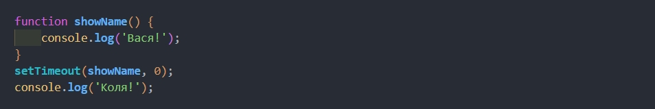
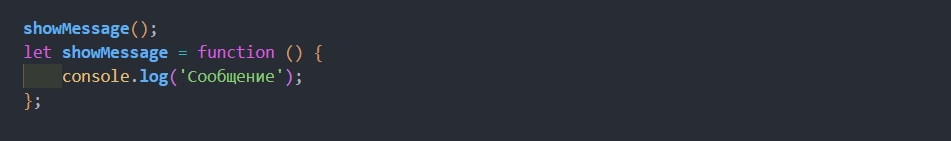
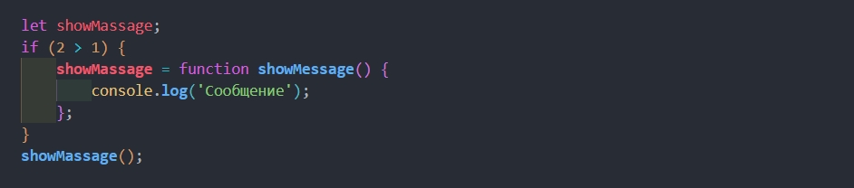

Функции в JAVASCRIPT

Первым в консоль попадет "Коля", потому как движок браузера (или любой другой среды в которой
выполняется наш JS код) первоначально исполняет основой код страницы и только потом возвращается к
действиям которые были запланированы с задержкой, даже с нулевой. Для них есть отдельная "очередь
планировщика событий(календарь)" *(Прочитано несколько статей про Event Loop и "планировщики
событий" "таски" и "микротаски", ответ фактически скатано с гугла и до конца так и не понятно
как это работает :c )

Так как функция записана методом "объявления" мы можем вызывать ее еще до написания в коде.

Так как функция записана в виде "выражения" - браузер не сможет запустить её до объявления в коде.

Чтобы сделать функцию видимой за пределами своего блока нам нужно записать её в виде
функционального выражения.